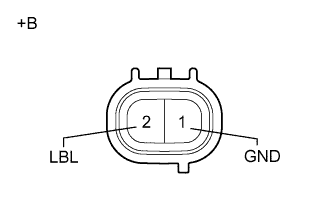

DTC C1453 Отсоединен датчик уровня жидкости в бачке |
DTC C1454 Низкий уровень жидкости в бачке |
| Код DTC | Условие обнаружения DTC | Неисправный участок |
| C1453 | Когда напряжение на контакте IG1 ЭБУ находится в диапазоне 10-14 В, обрыв в цепи датчика уровня тормозной жидкости сохраняется в течение не менее 2 с. |
|
| C1454 | Уровень жидкости в расширительном бачке ниже отметки LOW в течение 40 с после включения зажигания (IG), либо в течение 7 с во время работы электродвигателя насоса. |
| 1.ПРОВЕРЬТЕ УРОВЕНЬ ТОРМОЗНОЙ ЖИДКОСТИ |
Выключите зажигание.
Нажмите педаль тормоза не менее 40 раз (пока не будет ощущаться легкая реакция педали, и ход педали не станет больше).
Проверьте уровень тормозной жидкости в бачке.
|
| ||||
| OK | |
| 2.ПРОВЕРЬТЕ ДАТЧИК УРОВНЯ ТОРМОЗНОЙ ЖИДКОСТИ |
Отсоедините разъем A42 датчика уровня тормозной жидкости.
|  |
Измерьте сопротивление в соответствии со значениями, приведенными в таблице ниже.
| Контакты для подключения диагностического прибора | Положение переключателя | Заданные условия |
| 1 (GND) - 2 (LBL) | Поплавок вверху (датчик выключен) | 1,9 - 2,1 кОм |
| Поплавок внизу (датчик включен) | Менее 1 Ом |
| *a | Устройство с неподсоединенным жгутом проводов (датчик уровня тормозной жидкости) |
| Результат | Следующий шаг |
| OK | А |
| NG (для моделей с левосторонним рулевым управлением) | B |
| NG (для моделей с правосторонним рулевым управлением) | C |
|
| ||||
|
| ||||
| А | |
| 3.ПРОВЕРЬТЕ ЖГУТ ПРОВОДОВ И РАЗЪЕМ (ЭБУ СИСТЕМЫ ПРОТИВОСКОЛЬЖЕНИЯ – ДАТЧИК УРОВНЯ ТОРМОЗНОЙ ЖИДКОСТИ) |
Отсоедините разъем A7 ЭБУ системы противоскольжения.
Отсоедините разъем A42 датчика уровня тормозной жидкости.
Измерьте сопротивление в соответствии со значениями, приведенными в таблице ниже.
| Контакты для подключения диагностического прибора | Условие | Заданные условия |
| A7-41 (LBL) - A42-2 (LBL) | Всегда | Менее 1 Ом |
| A7-41 (LBL) - масса | Всегда | 10 кОм или более |
| A42-1 (GND) - масса | Всегда | Менее 1 Ом |
|
| ||||
| OK | |
| 4.СНОВА ПРОВЕРЬТЕ DTC |
Сбросьте DTC (Нажмите здесь).
Выключите зажигание.
Запустите двигатель и дайте ему поработать на холостом ходу в течение приблизительно 40 с.
Проверьте, выводится ли тот же DTC (Нажмите здесь).
| Результат | Следующий шаг |
| DTC не выводится | А |
| DTC выводятся (для моделей с левосторонним рулевым управлением) | B |
| DTC выводятся (для моделей с правосторонним рулевым управлением) | C |
|
| ||||
|
| ||||
| А | ||
| ||